Kiropraktika u Novom Sadu
Ja sam Dejan Maćešić, kiropraktičar u ordinaciji ProTherapy. Tretmane snimam uživo, pa možeš da ih pogledaš pre nego što dođeš.
S čim ljudi dolaze
Ovo su teme koje se najčešće vide u mojim snimcima. Klikni na karticu i pogledaj ceo tretman.
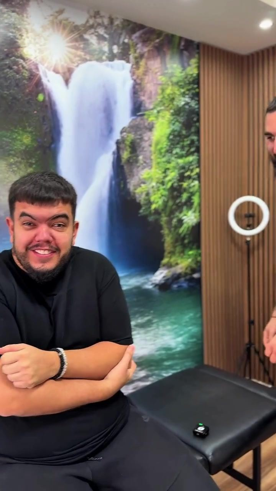
Vrat posle dana za računarom
Glava se teže okreće na jednu stranu, a napetost se penje od ramena do potiljka.
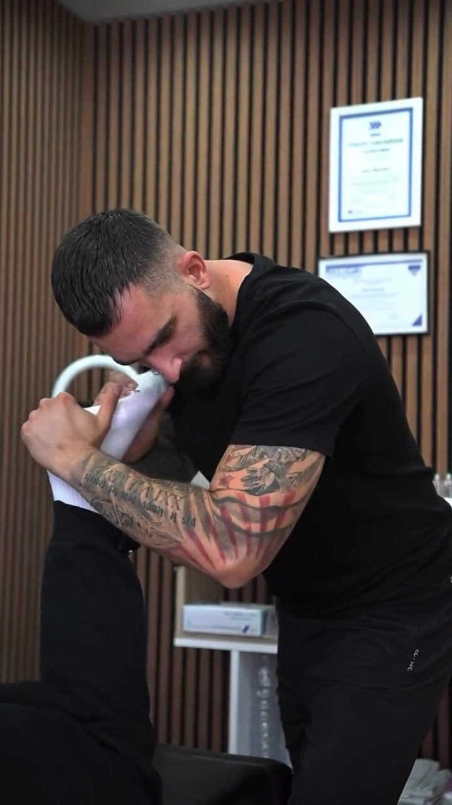
Trapez i rame
Trapez se zategne, rame se podigne ka uhu i ruka teže ide iznad glave.
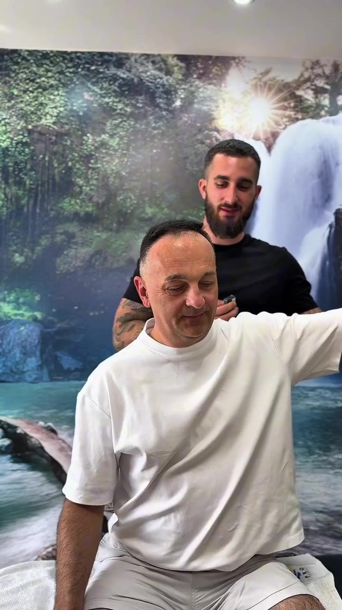
Bol ispod lopatice
Tačka koja se stalno vraća, pa se kriviš još više dok pokušavaš da je istegneš.
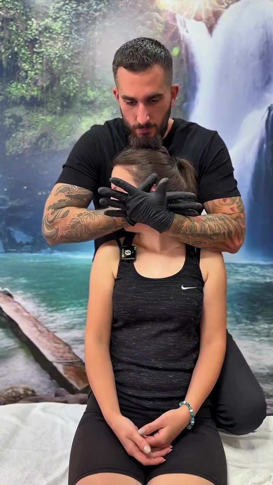
Napetost u vilici
Stezanje zuba, škljocanje ili osećaj da se usta ne otvaraju do kraja.
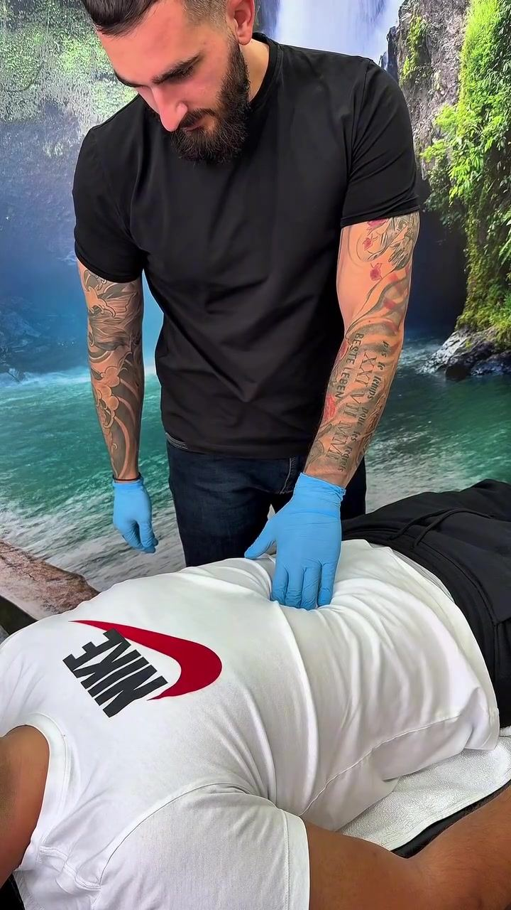
Stomak i stres
Kad se napetost skupi u stomaku: nadutost, stezanje i disanje samo u grudima.
Držanje
Ramena krenu napred, a glava za njima. Obično se primeti na fotografiji pre nego u ogledalu.
Prvi termin
Mesto koje boli i mesto odakle napetost kreće često nisu isto. Zato prvi termin počinje razgovorom i proverom pokreta, pa tek onda tretmanom.
Kako izgleda termin
Isti tok koji vidiš na snimcima. Redosled se prilagođava onome s čim dolaziš.
-
Pričamo šta te muči
Gde boli, od kada i čime se baviš ceo dan. Ako imaš nalaz ili snimak, ponesi ga.
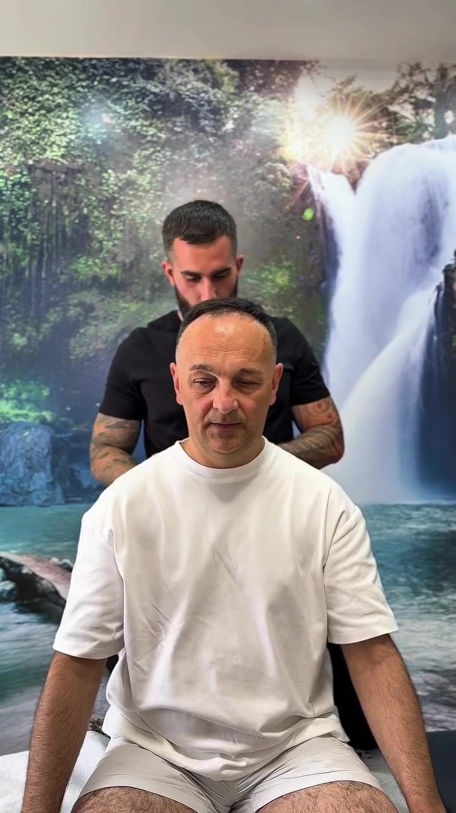
-
Proveravam kako se pomeraš
Okretanje glave, podizanje ruku, sedenje i disanje. Upoređujemo levu i desnu stranu.
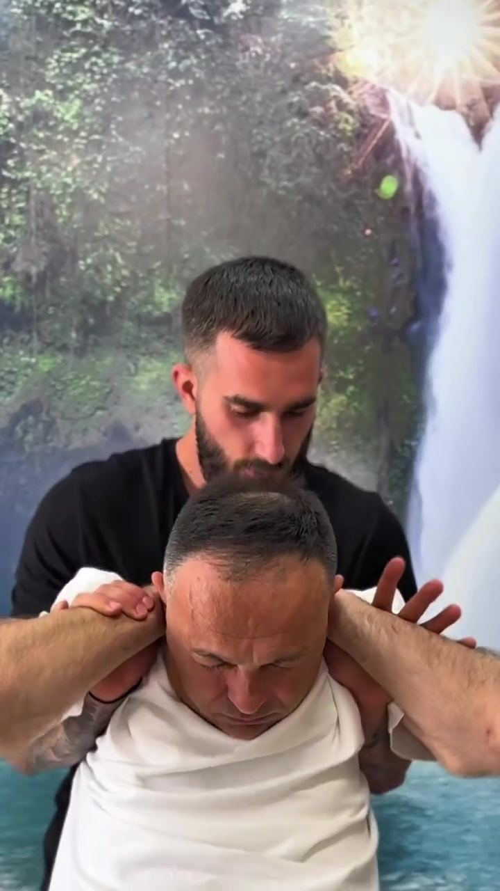
-
Radimo tretman
Na stolu ili u sedećem položaju. Usput objašnjavam šta radim i zašto, a ti pitaš šta god te zanima.
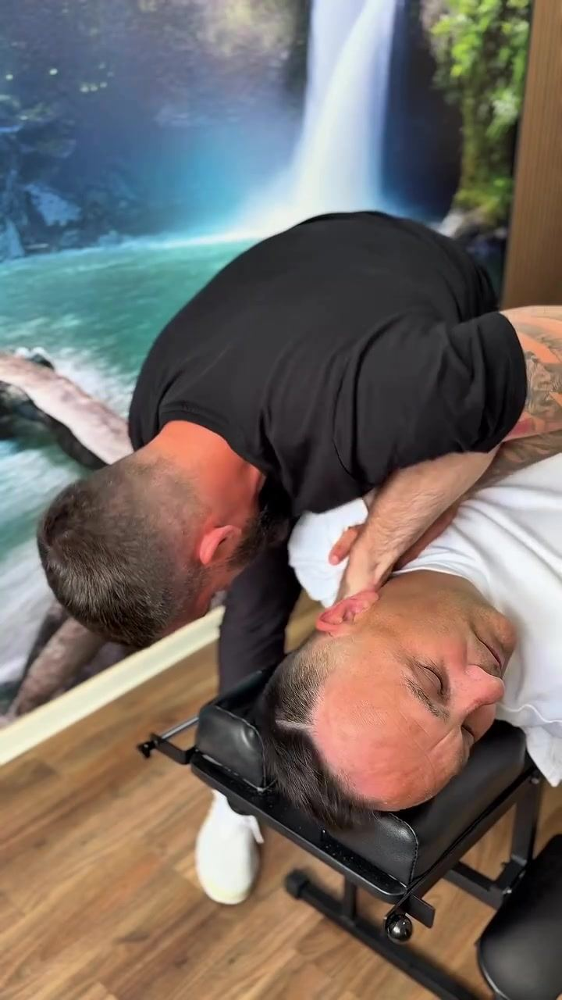
-
Dobijaš vežbe za kod kuće
Jednu ili dve stvari koje radiš sam, na primer disanje stomakom. Pokazujem ih dok si još u ordinaciji.
Snimci iz ordinacije
Isti sto i isti zid sa vodopadom koje ćeš videti kad dođeš. Pusti bilo koji snimak, ide sa zvukom.
Programi za kod kuće
Za dane između termina, ili kad trenutno ne možeš da dođeš.
Vodič LEĐA besplatno
Pet navika za ljude koji sede, u PDF-u i tri kratka videa. Stiže na email.
Uspravno: 21 dan uskoro
Tri nedelje, tri faze: disanje, otvaranje grudnog koša i jačanje leđa.
Programi su opšti i edukativni i ne zamenjuju pregled.
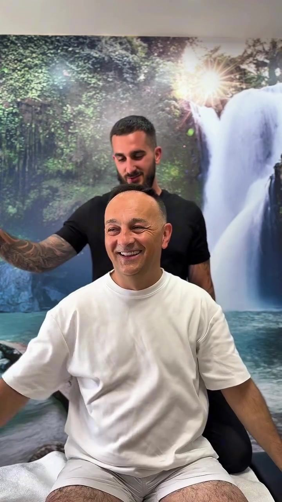
Dejan Maćešić, kiropraktičar
Radim u ordinaciji ProTherapy u Novom Sadu. Tretmane snimam za Instagram, da znaš šta te čeka pre nego što uđeš.
Na terminu objašnjavam šta radim i zašto, običnim rečima. Ako ti nešto nije jasno, pitaj: zato i snimam (pa se na snimcima čuje i kad se smejemo).
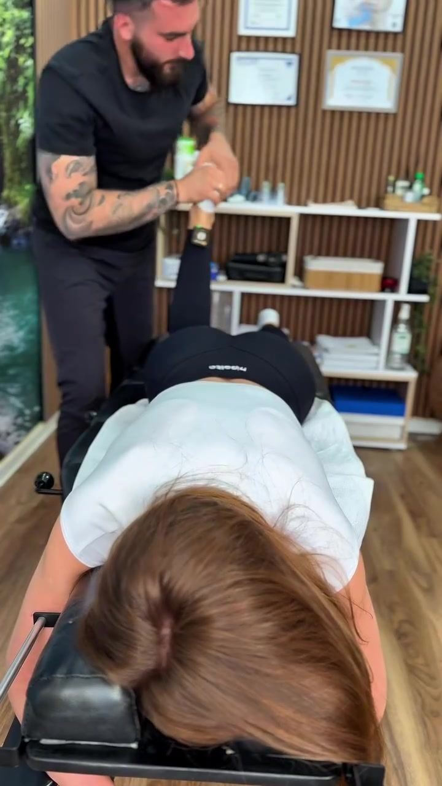
Termin i cena
Cenu prvog termina i slobodne termine dobijaš u poruci.
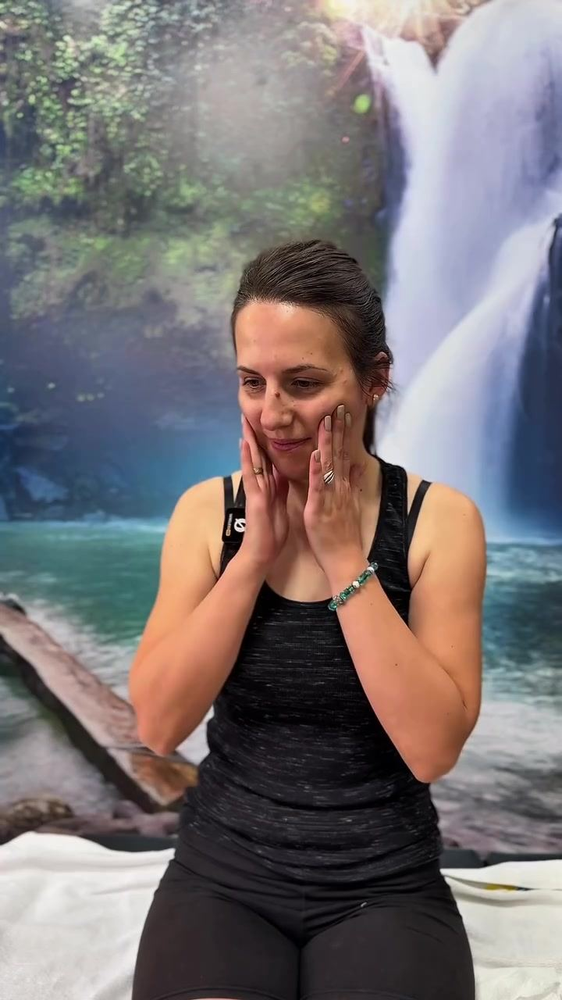
Česta pitanja
Kratki odgovori na ono što ljudi najčešće pitaju pre prvog termina.
Da li tretman boli?
Na zategnutim mestima može da bude neprijatno, ali ne bi trebalo da boli. Ako nešto smeta, kažeš i stajemo.
Koliko traje termin?
Trajanje ti kažem kad zakazujemo, jer zavisi od toga s čim dolaziš.
Šta da obučem?
Nešto udobno u čemu možeš da se sagneš i podigneš ruke: trenerku, helanke, majicu.
Da li mi treba uput?
Ne treba. Ako imaš nalaze ili snimke, ponesi ih.
Koliko termina obično treba?
To se vidi posle prvog termina. Nekome je dovoljan jedan, nekome treba nekoliko, i to ti kažem pre nego što se dogovorimo za sledeći.
Mogu li da dođem posle povrede?
Posle pada, udarca ili saobraćajne nesreće prvo idi kod lekara. Kad dobiješ nalaz, javi se sa njim.
Trudna sam ili imam hroničnu bolest. Mogu li da dođem?
Napiši to u formi, pa se pre termina dogovaramo da li i kako možemo da radimo.
Gde smo i kada radimo
Ordinacija
Kiropraktika ProTherapyNovi Sad
Radno vreme
- Ponedeljak–petak
- 9–20
- Subota
- 9–14
- Nedelja
- ne radimo
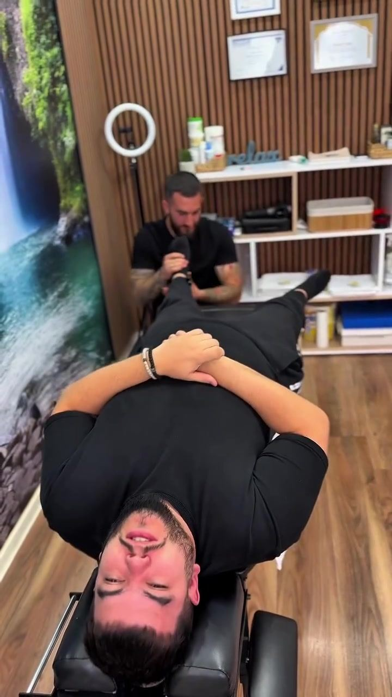